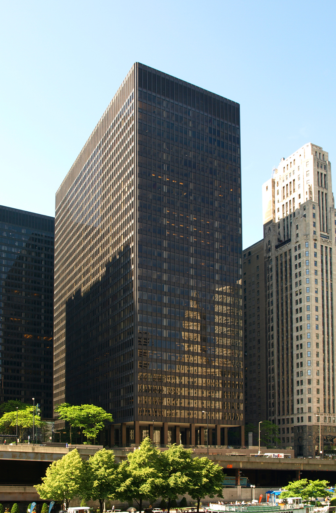
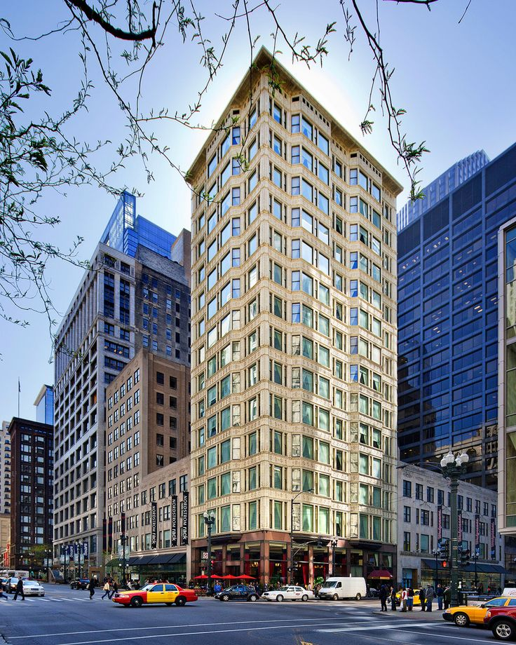
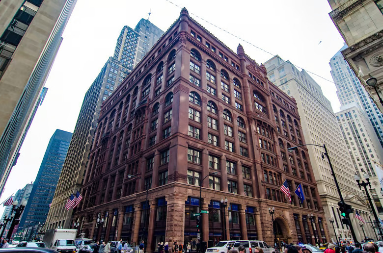
The First Chicago School was seen in the 1880s through the 1920s and constructed of brick, stone, or steel frames. The buildings offer more interior rental space and larger expanses of glass. The First Chicago School grabbed inspiration from Romanesque when using stone or brick frames to create arches. When Chicago architects moved to metal frames, they were able to create curves and right angles. The Chicago School is also known as Commercial Style and the American Renaissance Style. Distinctive features include large arched windows, decorative terra cotta panels, decorative bands, vertical strips of windows, and decorative art.
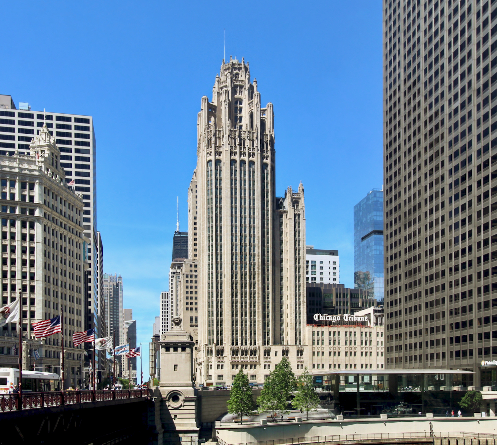
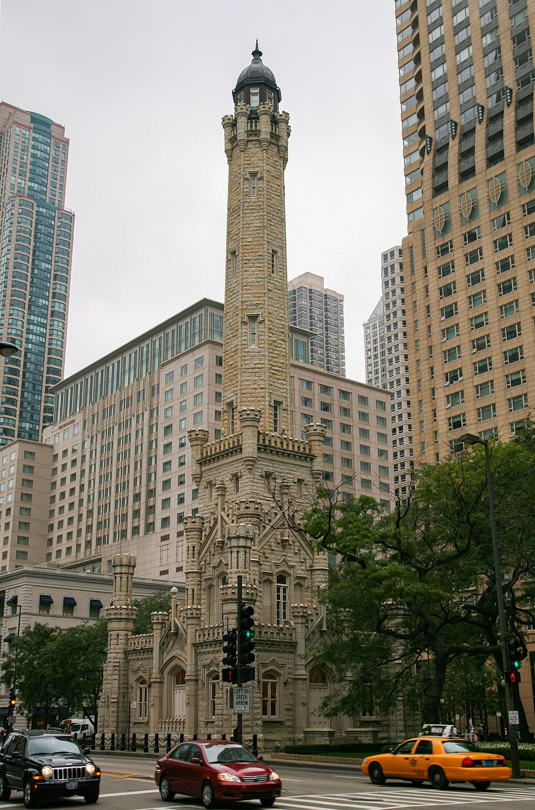
Gothic Revival was seen in the mid-19th century and inspired by 18th-century British revival, medieval castles, and cathedrals. Even though gothic skyscrapers are less common, Chicago offers a few around the city. Gothic Revival features include vertical emphasis, gothic tracery in stone, pointed arches, spires, ornaments at the top of the roof, or flying buttresses.
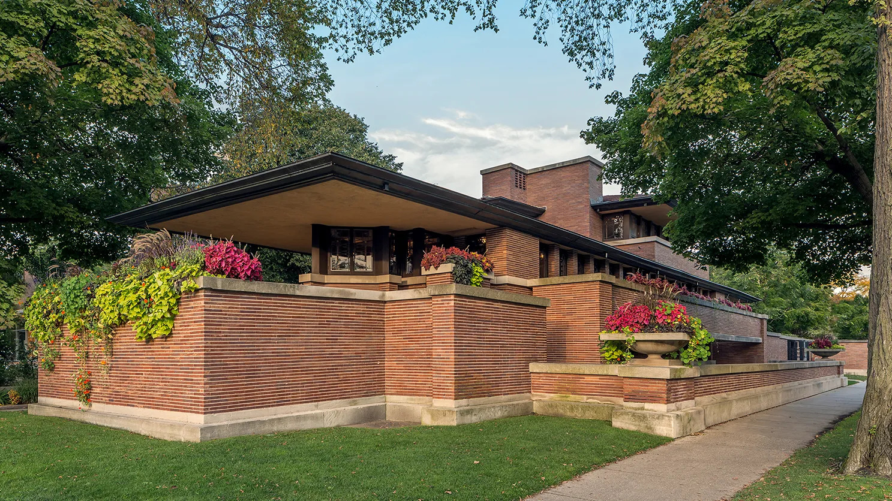
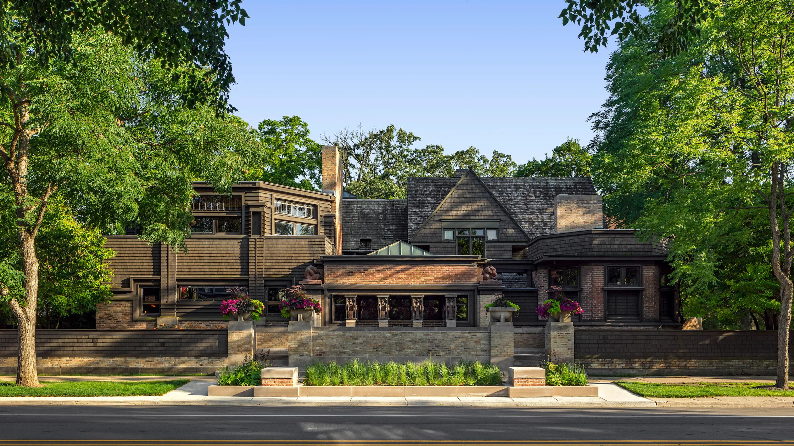
The Prairie School was seen around 1900 from a group of young architects, including Frank Lloyd Wright. This style emphasized nature, craftsmanship, and simplicity. The Prairie School style is fully expressed in residences, but schools, warehouse, and park buildings were also built in the style. Prairie buildings feature strong geometry and massing, including large central chimneys, brick or stucco exteriors, connected indoor and outdoor spaces, and flat roofs. The style’s popularity faded rapidly in the United States after 1915, although its influence can be seen in everything from Modernist architecture to Mid-Century ranches.
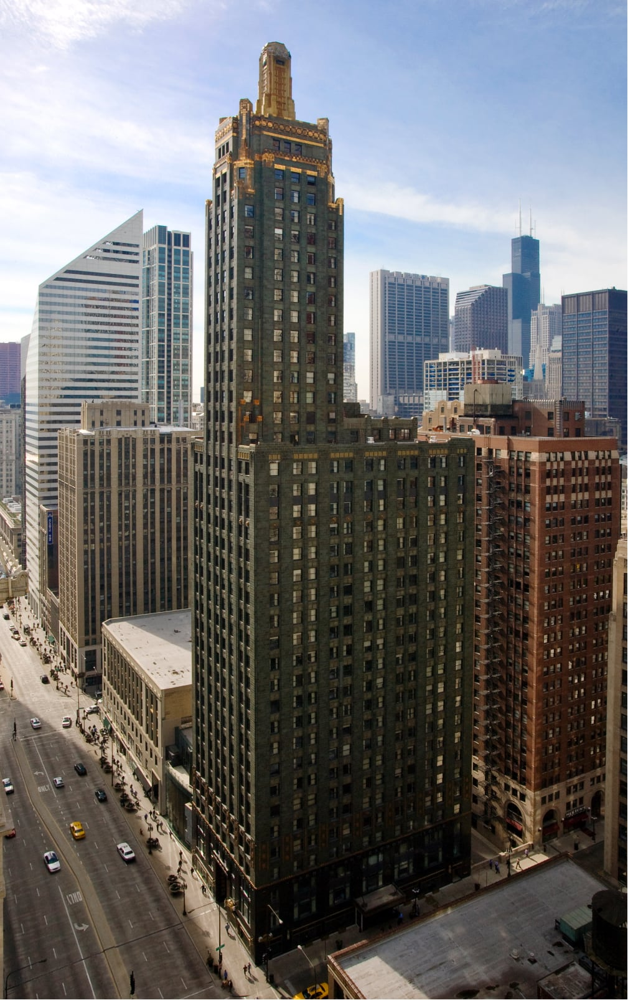
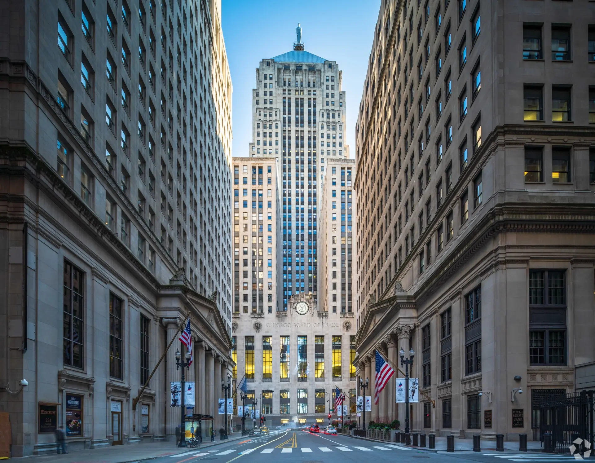
Art Deco was seen in the 1920s and 1930s and is a style of visual arts, architecture, and design. The style is characterized by bold geometric shapes, lavish ornamentation, and a sense of luxury and glamour. Art Deco buildings often feature stepped forms, decorative motifs inspired by ancient cultures, and the use of materials such as stainless steel, aluminum, and glass. This style was embraced by the wealthy post-war.

The Second Chicago School style appeared after World War 2 in the late 1940s, first as apartment towers and a decade later as commercial buildings. This style was initiated by Ludwig Mies van der Rohe and featured minimalist aesthetics, steel-and-glass curtain walls, and structural expressionism. The Second Chicago School style was like broader Modernism, but emphasized dark metal, repeating grids, and exposed steel and concrete skeleton.
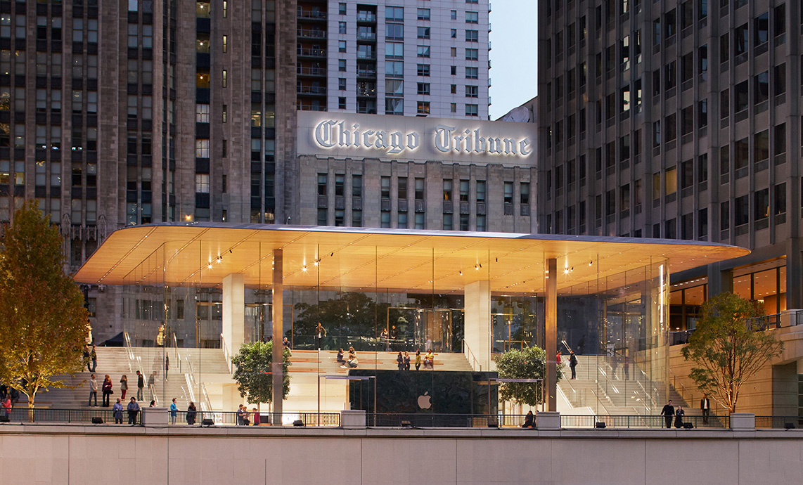
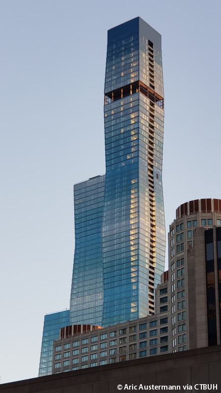
Contemporary style appears in the 21st-century to the present with innovative, structural experimentation. The style features fluid curves, gravity-defying angles, and seamless integration with nature. Contemporary style has large windows and floor-to-ceiling glass to allow natural light in.